桜の季節の終わりに [梅吉]
我が家は４連休だったのですっかりブログ活をサボっておりました。
暖かくなるとあちこち出かけたい気持ちがうずうずですもの＾＾
関西地区は街中の桜が散り始めとなりましたがうちのベランダ盆栽の桜は今が咲き始め。
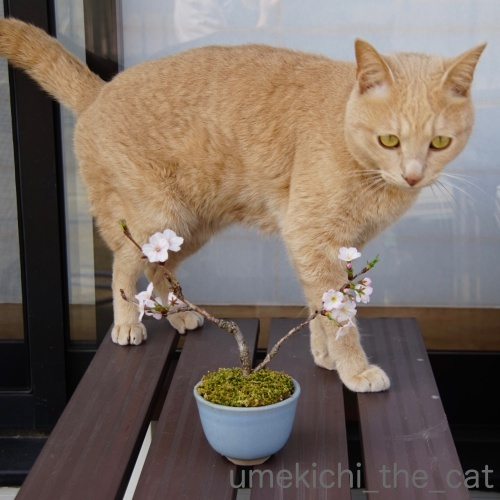
御殿場桜ですって。
モデルさんに登場をお願いしましたが気が乗らないのか
なかなかポーズを決めてくれません。
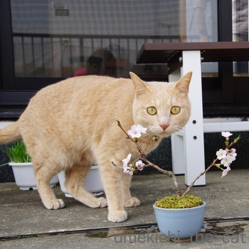
しょうがないのでモデルさんが動き回るあたりに下僕が桜を移動させますよ。
あ、目線は良いのですけどしっぽが切れてるーw
背景もゴチャゴチャだし下僕１、２が窓ガラスに映っちゃってます。
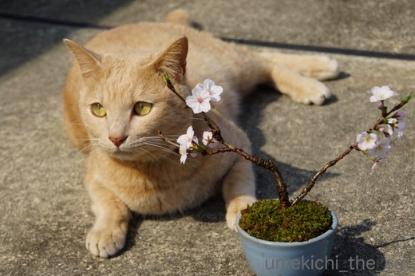
ゴロンとしたあたりにすかさず桜を移動。
おお！これは目線はもらえていませんがなかなか良い感じではないですか＾＾
これを今季の梅吉＆桜のベストショットといたします。
あっち向いてる視線は「明日を見据える瞳」ということでm(_ _)m
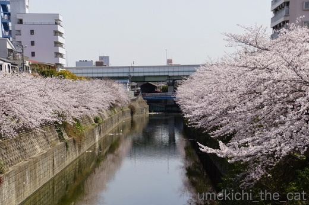
我が家の近所のなんちゃって隅田川にもお花見に行きました。
ここは周辺の桜よりも遅めに満開するのでちょうど見頃。
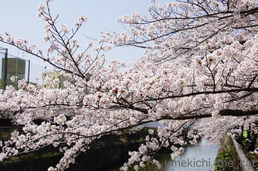
人も少ない穴場のスポット。
この先も静かにお花見できるといいなぁ。
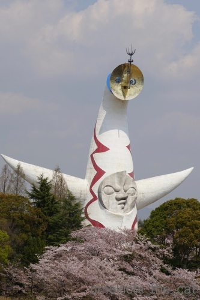
別の日。こちらは大にぎわいだった万博公園。
桜吹雪の中、お外ランチをしてきました。
でも、ここへはお花見に来たのではないのですよ！！
 ↑ガブッと一押し↑
↑ガブッと一押し↑
先月中旬から太陽の塔の内部の一般公開が予約制ではじまりました。
一般申し込みの初日はサーバーがダウンしてちょっとした騒動になっていたんですよ。
私が無事予約できたのは翌日の朝。
もともと平日狙いだったので余裕で予約できましたけど。
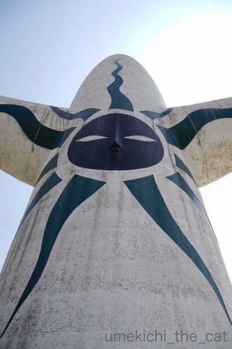
エントランスが近づくと裏側の黒い太陽が見えます。
この塔、生きてるみたいな感じがします。
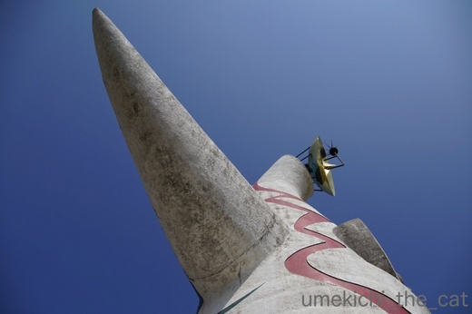
さらに近づくとこのアングル。
きっと叫びたくなる人がいるはず！
「毛細血管のいっぱい詰まっているところー！！」以下、任意で参加をお願いします(*>艸<)
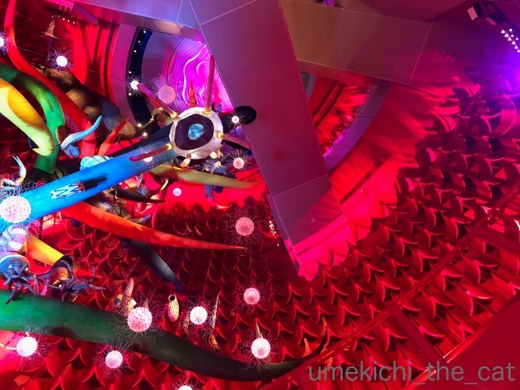
これが塔の内部です。左に写っているのが生命の樹。
クラゲなどの原生類から始まっててっぺん近くのクロマニョン人、
ネアンデルタール人に至るまでの生物の命の歴史が表現されています。
この塔が公開になったのは48年前の1970年。
生命の樹のオブジェ、当時はさぞかし前衛的で衝撃的だったと思われますが
現代の刺激の強い芸術や映像になれた私の目には正直あまりインパクトはなかったです。
が、反響版、消音版として取り付けられた壁の突起物が
内臓のひだみたいに見えてぞわぞわとした感覚と共に目が離せませんでした。
やっぱりこの塔は生きている・・・「どくどく」と血流の音がしそう。
ちなみに岡本太郎は「脳の襞」って言ってたみたいですよ。
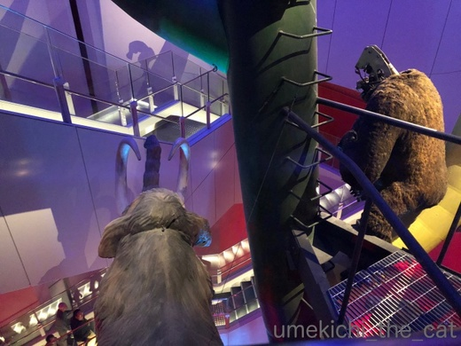
てっぺん付近のゴリラ。公開当時は頭が動く仕掛けになってんだとか。
今じゃ当たり前ですが当時は最先端の技術だったのでしょうねー。
機械が丸見えなのは今回の展示に合わせてあえてむき出しにしたんだそうです。
（塔の内部は撮影禁止です・・・・・ｺﾞﾒﾝﾅｻｲ・・・・・）
写真はないのですが両腕の内側がカッコ良かったです。SFチックな空間。
こちらのまとめサイトに画像や動画があります。
興味のある方はどうぞ＾＾
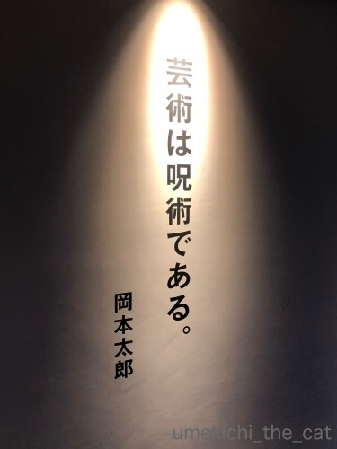
最後は太郎さんの格言で。
確かに！囚われちゃいますからね・・・・・
暖かくなるとあちこち出かけたい気持ちがうずうずですもの＾＾
関西地区は街中の桜が散り始めとなりましたがうちのベランダ盆栽の桜は今が咲き始め。
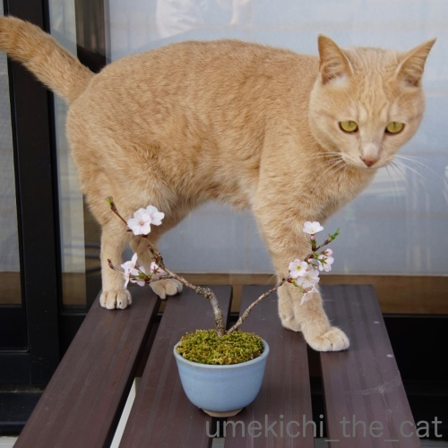
御殿場桜ですって。
モデルさんに登場をお願いしましたが気が乗らないのか
なかなかポーズを決めてくれません。
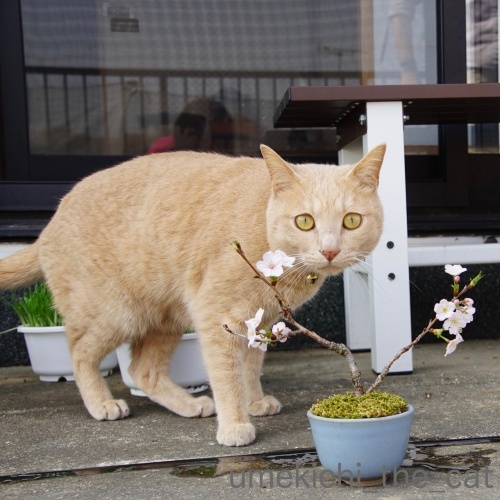
しょうがないのでモデルさんが動き回るあたりに下僕が桜を移動させますよ。
あ、目線は良いのですけどしっぽが切れてるーw
背景もゴチャゴチャだし下僕１、２が窓ガラスに映っちゃってます。
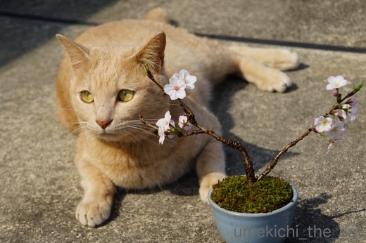
ゴロンとしたあたりにすかさず桜を移動。
おお！これは目線はもらえていませんがなかなか良い感じではないですか＾＾
これを今季の梅吉＆桜のベストショットといたします。
あっち向いてる視線は「明日を見据える瞳」ということでm(_ _)m
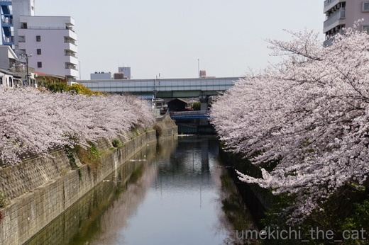
我が家の近所のなんちゃって隅田川にもお花見に行きました。
ここは周辺の桜よりも遅めに満開するのでちょうど見頃。
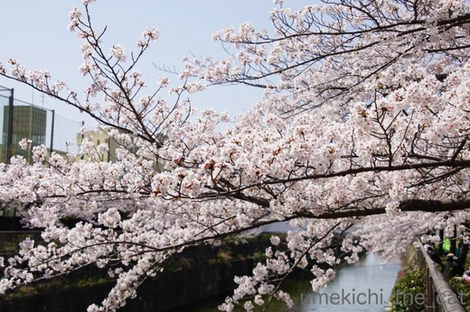
人も少ない穴場のスポット。
この先も静かにお花見できるといいなぁ。
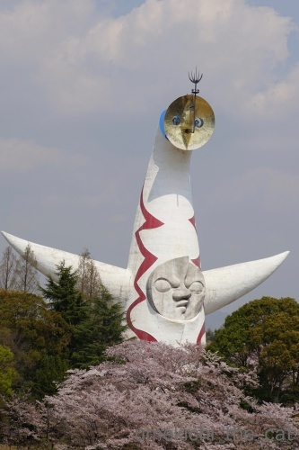
別の日。こちらは大にぎわいだった万博公園。
桜吹雪の中、お外ランチをしてきました。
でも、ここへはお花見に来たのではないのですよ！！
先月中旬から太陽の塔の内部の一般公開が予約制ではじまりました。
一般申し込みの初日はサーバーがダウンしてちょっとした騒動になっていたんですよ。
私が無事予約できたのは翌日の朝。
もともと平日狙いだったので余裕で予約できましたけど。
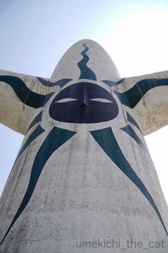
エントランスが近づくと裏側の黒い太陽が見えます。
この塔、生きてるみたいな感じがします。
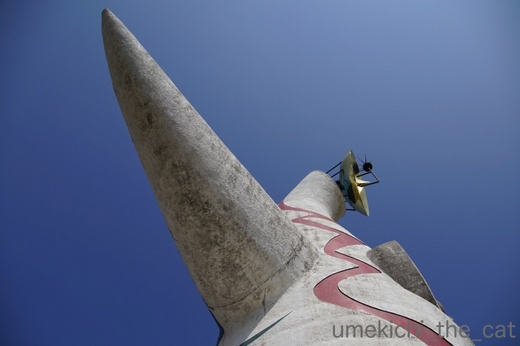
さらに近づくとこのアングル。
きっと叫びたくなる人がいるはず！
「毛細血管のいっぱい詰まっているところー！！」以下、任意で参加をお願いします(*>艸<)
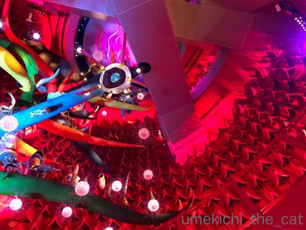
これが塔の内部です。左に写っているのが生命の樹。
クラゲなどの原生類から始まっててっぺん近くのクロマニョン人、
ネアンデルタール人に至るまでの生物の命の歴史が表現されています。
この塔が公開になったのは48年前の1970年。
生命の樹のオブジェ、当時はさぞかし前衛的で衝撃的だったと思われますが
現代の刺激の強い芸術や映像になれた私の目には正直あまりインパクトはなかったです。
が、反響版、消音版として取り付けられた壁の突起物が
内臓のひだみたいに見えてぞわぞわとした感覚と共に目が離せませんでした。
やっぱりこの塔は生きている・・・「どくどく」と血流の音がしそう。
ちなみに岡本太郎は「脳の襞」って言ってたみたいですよ。
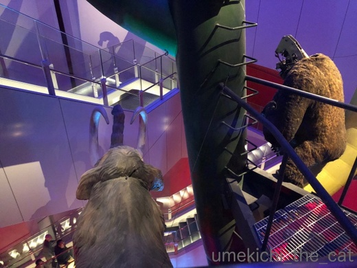
てっぺん付近のゴリラ。公開当時は頭が動く仕掛けになってんだとか。
今じゃ当たり前ですが当時は最先端の技術だったのでしょうねー。
機械が丸見えなのは今回の展示に合わせてあえてむき出しにしたんだそうです。
（塔の内部は撮影禁止です・・・・・ｺﾞﾒﾝﾅｻｲ・・・・・）
写真はないのですが両腕の内側がカッコ良かったです。SFチックな空間。
こちらのまとめサイトに画像や動画があります。
興味のある方はどうぞ＾＾
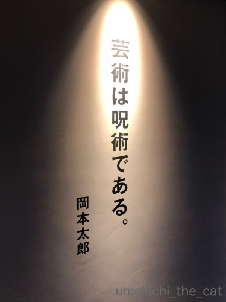
最後は太郎さんの格言で。
確かに！囚われちゃいますからね・・・・・
2018-04-04 13:48
nice!(55)
コメント(22)

カフェオレ色の梅吉

梅吉 2023年8月10日 永眠


梅吉と出会った譲渡会

犬猫の理由なき殺処分ゼロ
妄想広告
UMEKICHI 光

爆発的に早い！
時々攻撃的！
Thanks to Mr.Boss365
爆発的に早い！
時々攻撃的！
Thanks to Mr.Boss365

やっとちぃさんのブログにたどり着けた(笑)
ソネブロ重すぎだっつーの！
まあ、無料会員なので文句は言えないですが・・・^^;
太陽の塔の中、こんなふうになってるのですね！
素敵素敵！
また大阪に行く機会があったら、今度はホンモノを観に行きたいです^^
あー、でもきっと大阪に行ったらやっぱり梅吉君に会いに行っちゃうんだろうなｗｗｗ
そして今度こそ長く滞在して飲んだくれちゃうかもー(笑)
このコメントがエラーにならずに反映されますように！ｗｗ
by リュカ (2018-04-04 14:56)
梅吉さんと桜♪
良いですねぇ～(#^.^#)
梅吉さんのところへせっせと
運ぶ姿も想像すると笑っちゃいます！！
太陽の塔！！
中がものすごいカラフル♪
元気がもらえそうですね！
by きぃ (2018-04-04 15:49)
梅吉さんに桜良いですねぇ。松や竹などもお持ちでしょうか。
太陽の塔私にはインパクト十分です。面白いです。階段を登りながら見学するものなのですね。
by zombiekong (2018-04-04 15:56)
可愛い桜の盆栽ですね。
『背景もゴチャゴチャだし下僕１、２が窓ガラスに映っちゃってます』って、
言われなければ分かりませんよ〜
だって、梅吉さんにクギヅケですもの（笑）
by kiki (2018-04-04 16:58)
梅吉くん、本当にいいモデルさんだよ～！！
3枚目は確かにベストかも、めっちゃ可愛いもの。撫でたいのに撫でられない。ん～もどかしいってなってるよ。
盆栽の桜もとっても素敵！
家にもほしいなって思うんだけど、気づいたら桜の花だけがきれいにパクっとされてたらと思うと恐ろしくてｗ
ベランダで育てればいいのか！
太陽の塔の中は初めてみたかも。太陽の塔自体映像でしかみたことないよ。
生きてるように感じるって、すごいと思う！
私もいつか実物を見て見たいです(^-^)
by emi (2018-04-04 18:22)
梅吉さんと桜のコラボ、素敵ですねぇ=(^.^)=
お猫様にモデルを頼む場合は、下僕が用意周到にしないと
なかなか良い写真が撮れませんよねぇ(⌒-⌒; )
我が家の場合は、私がどんなに苦労してもゴッドマザーの
身動き一つでどうとでもなりますが( T_T)
by ニッキー (2018-04-04 18:55)
設置されている場所のせいだとは思いませんが、通天閣には及びませんね！
大阪はやっぱり、浪速です！^ ^
by KENT0mg (2018-04-04 19:51)
太陽の塔は映画20世紀少年のイメージが強いです！
万博公園は桜が凄いですね(^^)
by ma2ma2 (2018-04-04 20:18)
太陽の塔は近くで見たことがないです。
車で走行中に見たことはあります。
梅吉さんの前に強引に？盆栽を置いた感が伝わってきます(^^;
梅吉さん、可愛い(^^)
by riverwalk (2018-04-04 21:22)
梅吉さんと桜のお写真、キマってます！
それにしても、小さな枝ぶりなのに
ちゃんと花を咲かせる桜さんには感動してしまいます。
太陽の塔、現役時代に中に入ったと思うのですが
全く記憶にありません。。。^^;
by yes_hama (2018-04-04 21:36)
梅吉さんが、いつもより大きく感じる。
かわいい桜盆栽ですね。
太陽の塔、実物はみたことないのですが
こどもの時、宿題工作で
太陽の塔をつくったので
とても懐かしいと言うか…
世代なんですよね~^^;
by ふにゃいの (2018-04-04 22:50)
桜＆梅吉さん、3枚目このままポスターにしたいです(*^▽^*)
目線の先に何があるのか妄想むくむくですよ♪
公園のど真ん中にズボッと立ってる塔そのものが異様な存在感を放っていますから、内側に何があっても驚かないかもしれません^^;
なんちゃって墨田川、貴重なスポットですね～。
最近はSNSで紹介されて一気に人が押し寄せたりするから要注意です。
by ゆきち (2018-04-04 23:46)
桜の盆栽！（ ゜∀ ゜）いいですね、すてき♡
こんなちっこいのに、ちゃんと咲くのですね。
モデルさん、桜にはあまり興味ないのかしら？
（我が家だったら、花はすぐムシャムシャと消えているはず^^;）
うわー太陽の塔！これ本物見てみたいんです。
シャンシャン並みの人気だぁ・・・
あれ？内部って操縦席があるんじゃなかったんだ・・・笑
by Ja-Kou66 (2018-04-04 23:54)
桜の盆栽、可愛いです～。
梅吉さんと桜、いいですねえ。
絵になってます＾＾
なんかちょっと困った顔してるんだけど、最後は少し落ち着いた？
運んでる姿を想像すると‥＾m＾
太陽の塔、生きているみたいな感じなんだ～！
見たことはあるんですが、昔なので、あまりはっきり覚えてないんです＾＾；
by sana (2018-04-05 00:42)
かわいい桜ですね。
撮影会、お疲れさまでした。
良い写真が撮れましたね＾＾
by ぽちの輔 (2018-04-05 06:25)
桜も盆栽にできるのですね？！(@_@)！
これは2ショットにうってつけ！
太陽の塔にも入られたとは流石です。
by よーちゃん (2018-04-05 08:20)
梅吉さんの表情、何か本当にしゃべり出しそうです(^^;
太陽の塔！その当時は名古屋にいましたが見に行きました。
父親に肩車されている映像がテレビに映ったそうです〜！
私は…上から蜘蛛(のぬいぐるみ)がいきなり降りてくる施設で
大泣きした事しか覚えていません(-_-;)
by も〜 (2018-04-05 11:49)
梅と桜と・・・なんと贅沢な！良く似合ってる♪
TAROさま・・・改めてすげーやつだったんだな～。。。
by Ginger (2018-04-05 15:12)
リュカさん＞
ソネット、ウチは有料会員なの！
すごいよ、毎月324円も払っているから
大きな声で文句言っちゃおうかしら(*>艸<)
「サーバー自体が末期的状態なのに
採算の悪い事業だからサーバー買い替えの予算が下りない」
って言ってるブロガーさんもいたけど信憑性あるよねぇ・・・
太陽の塔のある万博公園は
当時のパビリオンの名残が残っていたりして面白いの。
各国が残していった展示物が民族博物館にまとめて展示されてるんだけど
それがまた面白くてねー。
アフリカの呪術の面とか儀式に使う様な小物とか。妖しくてぞくぞく、ぞわぞわ＾＾
それも見て欲しいな。もちろん梅吉にも会いに来てー！
そして呑んだくれようヾ(*ΦωΦ)ﾉ
きぃさん＞
ふふふ、中腰になって桜の鉢を移動させていましたよ(*>艸<)
気をつけないと梅吉が鉢を蹴飛ばしちゃうから
それを避けるのも忙しかったわ！
太陽の塔の中は写真ではわかりませんが
照明の色が変わる様になっていてさらにカラフルでした。
不思議な音楽も流れていて雰囲気満点でしたよー。
たぶんLeaちゃんは怖がっちゃうだろうなーwww
zombiekongさん＞
梅、ときたら松竹ですものねー＾＾
松はあるけど竹はないな・・・・・そろえて松竹梅写真も面白そう！！
もちろん我が家の場合格は「梅」が一番上ですから(^_－)☆
太陽の塔、エレベーターで上がって見学することもできます。
申し込み時に選べる様になっていたので階段を選びましたよ
立ち止まりながら見るので「きつい」とかは全くなかったです＾＾
kikiさん＞
写真、ついつい言い訳しちゃうんですよねー(^▽^;)
今度黙って掲載しちゃうので心の中で「あ。」って思って
スルーしてくださいませ(*>艸<)
今年のお花見で折れた枝をいくつかもらって挿し木にしたので（おっとが）
来年はソメイヨシノの盆栽と梅吉が登場するかもしれません＾＾
emiさん＞
梅吉は花を食べるなんて風流なことはしないんだけど
枝をがぶっとしたりていていするので目が離せません！
盆栽はベランダがおすすめですよ！
風に当てないと土がカビたりするし・・・・・
鉢が小さい分水管理や強風でダメになっちゃったりしやすいんだけど
お花が咲くと嬉しいですよー。
（うちは基本お花の咲くもの。いわゆる盆栽！の松はないの。可愛い松はある＾＾）
太陽の塔は実際に見ると大迫力ですよ。
夜一人であの場所に行ってって言われたら怖くて泣く！！
ニッキーさん＞
盆栽の移動一生懸命頑張りましたー＾＾
「梅吉こっち見て！」って指さすと指の匂いを嗅ぎにきたり
カメラをコツコツするとカメラを見に来たり・・・と
思い通りに行かない楽しい撮影でございました(*>艸<)
ニッキーさんのお宅ではゴッドマザー様の協力が不可欠ですね！！
KENT0mgさん＞
太陽の塔はゲージュツですが
通天閣は浪速のソウルの象徴ですからねー＾＾
気合がちゃいまんねん。
ma2ma2さん＞
万博公園の桜、見事ですよー＾＾
チューリップも見頃でオランダみたいでした。
（行ったことないけどwww）
riverwalkさん＞
無理矢理感、強引感がこの写真のテーマでもあります(๑•̀ㅂ•́)و✧
梅吉の「しゃーないなー」の表情も決め手です(*>艸<)
太陽の塔は高速道路から見えるのかな？
車で走りながら見てもインパクト大だったのではないでしょうか。
by ちぃ (2018-04-07 08:22)
yes_hamaさん＞
小品盆栽は夏は水切れ、冬は寒さと強風に晒されるので
「死んじゃったかな・・・」と思うことも度々なんですが
（ダメになっちゃうのももちろんあります）
春には元気に花を咲かせてくれる健気な子たちです＾＾
同時に植物って生命力あるな、と思う瞬間でもありますよー。
太陽の塔は公開当時は周りに足場みたいな空中回廊が設置されていたり
人が凄すぎて全容がはっきりしなかったのかもしれませんねー。
それとお子ちゃまだったので全然違うところ見てたとかwww
ふにゃいのさん＞
梅吉のガリバー旅行記みたいになってますね(≧▽≦)
置き所にも困るしこぢんまりしたのが可愛いので
盆栽はなるべく小さく仕立てています（おっとが）。
宿題工作に太陽の塔が！
実際に見たことない子が大半だったと思いますが
課題になる程有名でインパクト大だったのでしょうねー。
ゆきちさん＞
うふふ、今年はこの写真をどこかに投稿しようと目論んでおります＾＾
梅吉の視線の先には・・・おやつ、ごはんのまぼろし・・(*>艸<)
なんちゃって隅田川、
実はネットに大阪穴場のお花見場所として紹介されてます。
有名ブロガーさんやインフルエンサーのみなさんが
訪れないことを願うばかりです(-_-メ)
Ja-Kou66さん＞
モデルさん、家の中だと花も枝もかじっちゃいそうですが
お外は他に興味を引くものがたくさんなので盆栽には興味を示さず、なのです＾＾
太陽の塔、立ち入り禁止のところがたくさんあったので
きっとそこに操縦席があったに違いないと睨んでおります。
岡本太郎氏も実は塔の中で生きてるな、と思いましたよ(*>艸<)
夜な夜な徘徊していそう・・・・・
sanaさん＞
梅吉には無理にモデルをお願いしたので「まいったな・・・」と
思っていたかもー (^▽^;)
桜の鉢を運んでいる姿は誰か見てたら「あの人中腰でなにやってるんだろう」
と笑ってたと思いますwww
太陽の塔は離れて見るのと近づいて見るのと雰囲気が違います。
今度は塔の内部見学をいかがですか＾＾
by ちぃ (2018-04-07 15:02)
ぽちの輔さん＞
桜は挿し木で養生中のもあるのでもっと増えそうです。
何年か後には桜のアーチの下に佇む梅吉なんてのを
撮ってみたいなと思ってます＾＾
よーちゃん＞
大体のものは盆栽に仕立てることが出来るんですよー＾＾
鉢が小さな分夏場の水やりが難しいのですが・・・・・
太陽の塔の内部公開は楽しみにしておりました！
良いもの見ましたー＾＾
も〜さん＞
そうするとどこかの映像資料に
も〜さんの幼少期のお姿が残されているのですね＾＾
蜘蛛のぬいぐるみが落ちてくるなんて怖っ！
万博なのにそんなお化け屋敷みたいな施設があったのですねー。
蜘蛛、トラウマになってませんか？
私はトラウマはないけど蜘蛛はキライです！！！
GIngerさん＞
生梅と桜、季節の出会いもの、とでもいいましょうか＾＾
太郎氏、建設中の太陽の塔にも頻繁に足を運んでいた様で・・・
考案者なので当たり前ではあるのでしょうが
すごく積極的に参加されている風な写真が展示されていて
なんだか可愛くて笑っちゃいましたwww
by ちぃ (2018-04-07 15:19)
大阪万博は仕事帰りに何度か行きました、会社のパスポート入場券を使います
太陽の塔内部は初めて知りました、会場跡地は公園になっているのですね。
by クッキー (2018-04-12 14:49)